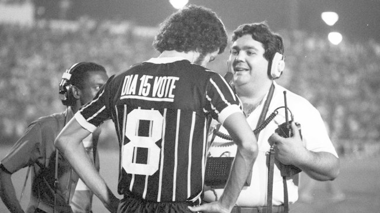
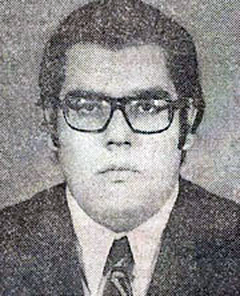
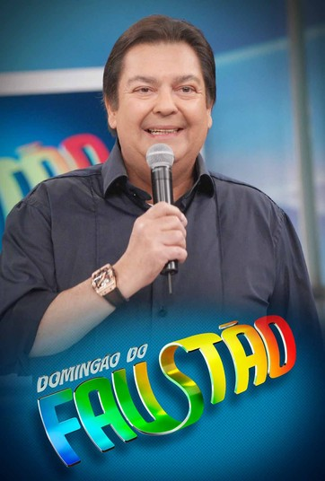

Before Globo
Fausto was one of the greatest soccer players in the World. The level of his skills was so
high that he would probabily beat Pelé in with his foot tied. But, something bad happened:
a soccer player named "Dia 15 Vote" made him hold a C4-bomb inside the stadio, and this
incident cost Fausto career

Fausto being a bomberman
Fausto and his new Job
Forced to left his passion, the "Chuta logo essa bola bicho" as he called, Soccer was no
longer a option for Fausto. People in the streets tried to kick his ass, and he needed to
be someone else: A famous mexican tv-show called Chaves, or: "Olha o Chaves ai bixo" as he
called open the gates to Fausto, and he took a role for "Seu Barriga", a beloved character
in the show

Fausto is the new Barriga
Big Sunday of Big Fausto
Finally the golden era has come. Fausto has become a phenomenon among the children and
the people. His acting skills made the name of "Big Fausto", as he started to get know.
Globo Studios, a brazillian hollywood wanna-be conviced Fausto to left "Olha o Chaves ai bixo"
and work in a new Tv-Show: The Big Sunday of Big Fausto, where he stils continue today.

Big Sunday of Big Fausto